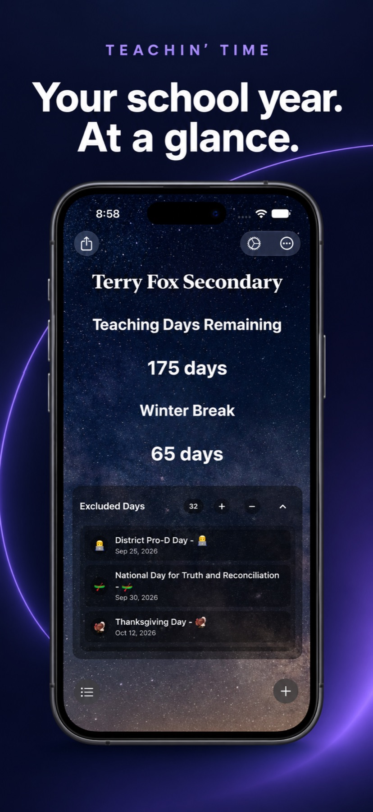
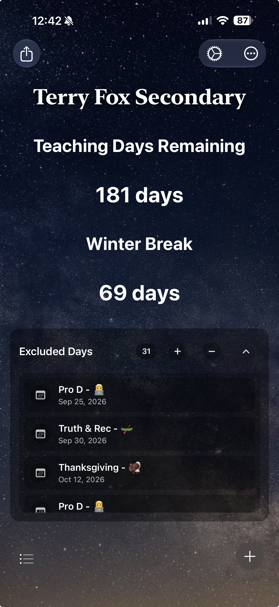
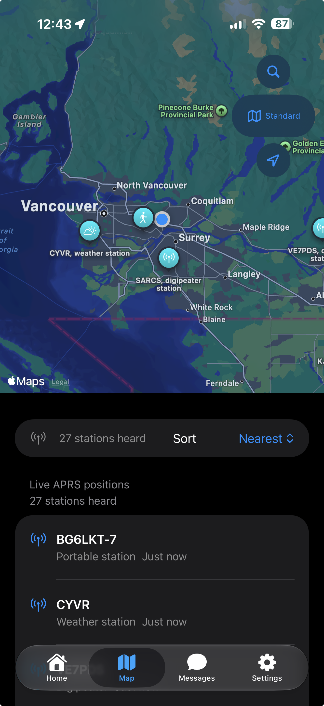
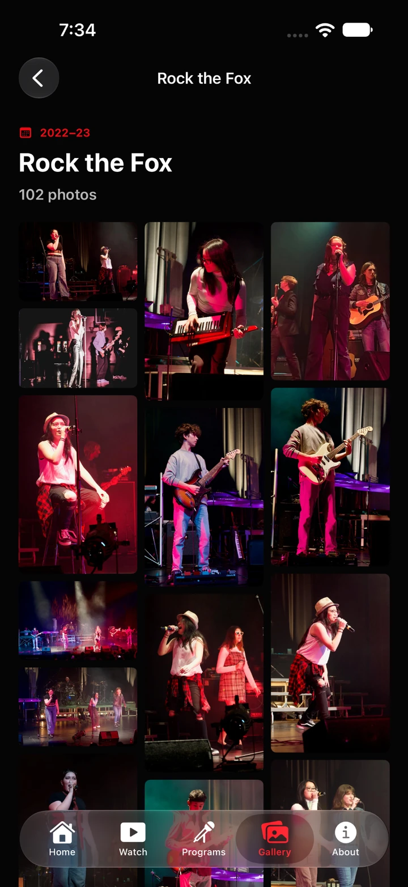
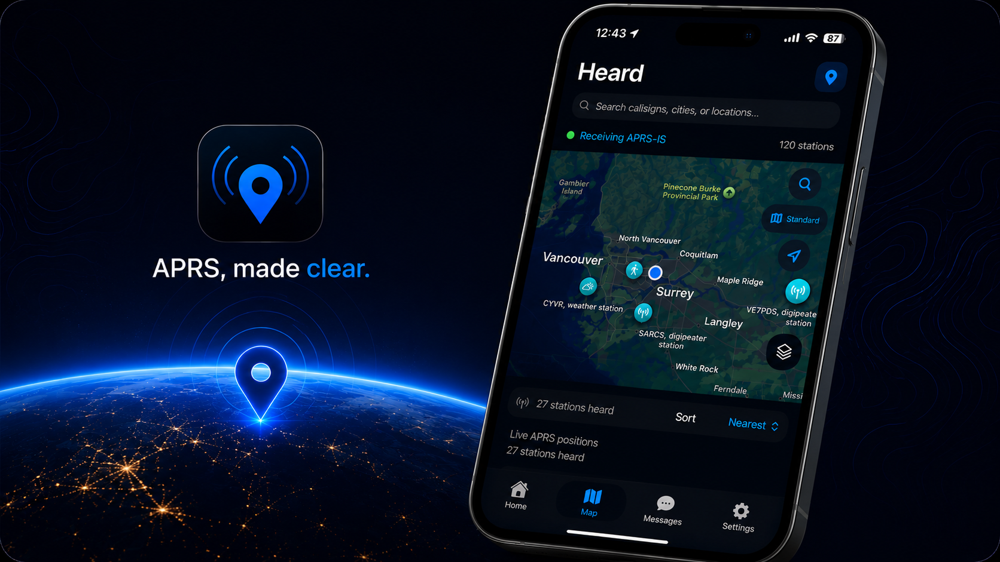
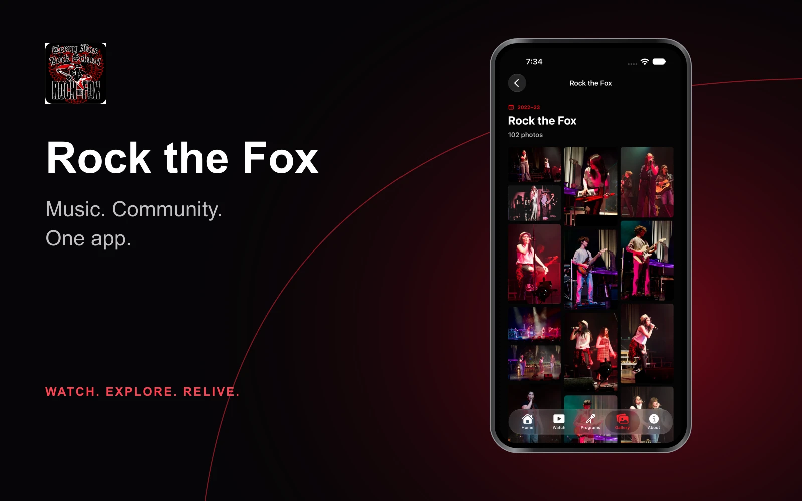

At a glance.

Independent apps for Apple platforms
Focused apps for everyday tasks, designed to be clear, useful, and easy to trust.




Featured app
A modern APRS companion for seeing real-time radio activity nearby, built around fast maps, clear station details, and field-ready context.
App family
Every app is shaped around the people who use it, with a focused experience and clear support when they need it.


Future projects
New apps will follow the same care: clear purpose, practical details, and privacy explained in plain language.
Approach
Each app is built around a specific job, without unnecessary features getting in the way.
Information is easy to scan, controls are simple, and common actions stay close at hand.
Data collection stays minimal, choices are explained plainly, and every app includes clear privacy notes.